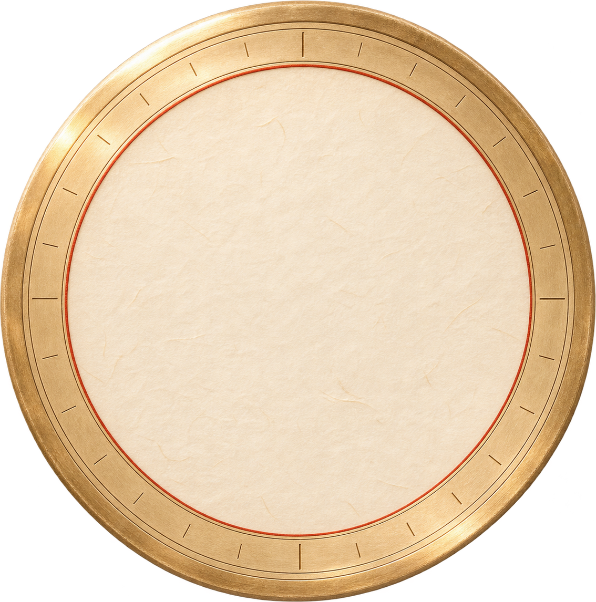

9:41
●●● ▰
方位随日期与时辰展开
罗盘
2026年11月12日
日方位
时方位
选择时辰
子时 · 丙子
丑时 · 丁丑
寅时 · 戊寅
卯时 · 己卯
辰时 · 庚辰
巳时 · 辛巳
午时 · 壬午
未时 · 癸未
申时 · 甲申
酉时 · 乙酉
戌时 · 丙戌
亥时 · 丁亥
所选日期的日方位

北
东北
东
东南
南
西南
西
西北
喜
财
福
阳
阴
正北
固定北向图
喜神
西北
财神
正东
福神
西南
阳贵
正南
阴贵
东北
煞方
北
固定北向图 · 上方为正北
‹
日历
岁时
择日
倒计日
0
设置
设计原型 · 方位数据为2026-11-12样本；非其他日期真实黄历。无需脚本也显示完整初始罗盘。